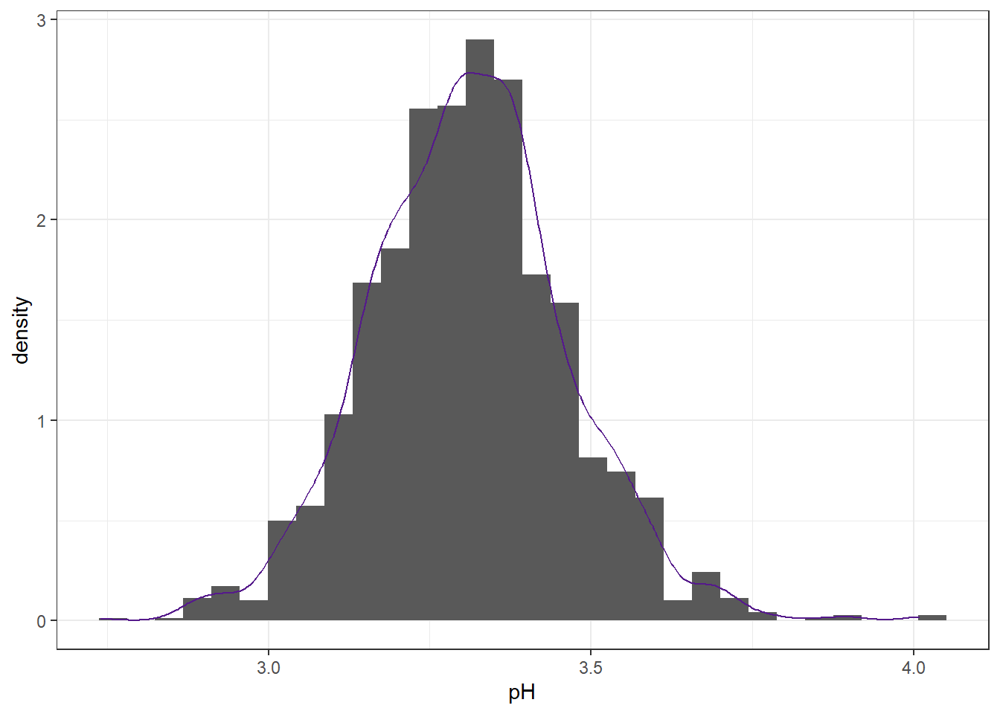
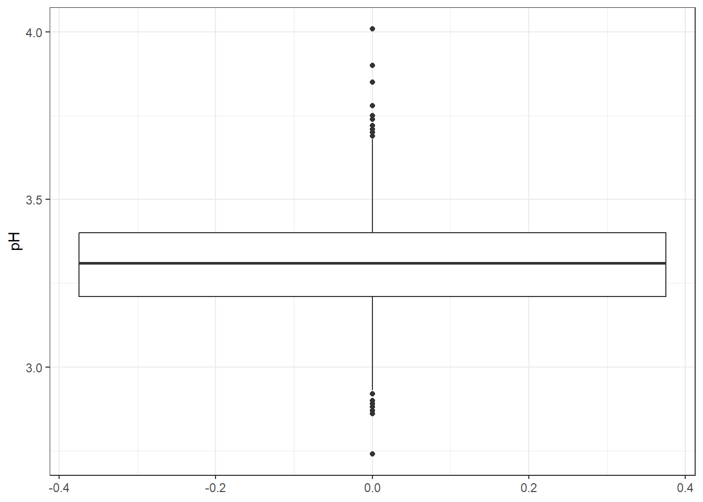

Chapter 16 Analisis de la variable pH
datos %>%
summarise(n= length(pH),
prom= mean(pH),
ds= sd(pH),
mediana= median(pH),
RIC= IQR(pH),
minimo= min(pH),
maximo= max(pH),
Q1= quantile(pH, 0.25),
Q3= quantile(pH, 0.75))## # A tibble: 1 × 9
## n prom ds mediana RIC minimo maximo Q1 Q3
## <int> <dbl> <dbl> <dbl> <dbl> <dbl> <dbl> <dbl> <dbl>
## 1 1599 3.31 0.154 3.31 0.19 2.74 4.01 3.21 3.4La variable pH, que en este contexto se refiere a la medida de acidez o alcalinidad del vino (donde valores bajos indican mayor acidez), fue analizada a partir de 1.599 observaciones. Se obtuvo un promedio de 3,311 (DS = 0,154), donde el 50% de los valores se encuentran por debajo de 3,31. El 25% más bajo está por debajo de 3,21 y el 25% más alto supera los 3,40, evidenciando una baja dispersión. El valor mínimo registrado fue de 2,74 y el máximo de 4,01, lo que indica un rango de 1,27.
16.1 Histograma de pH
datos %>%
ggplot(aes(x= pH))+
geom_histogram(aes(y=after_stat(density)))+
geom_density(color= 'purple4')+
theme_bw()## `stat_bin()` using `bins = 30`. Pick better value with `binwidth`.
16.2 Boxplot de pH

La distribución de pH es simétrica; sin embargo, presenta una fuerte concentración de datos en valores intermedios y una cantidad significativa de valores extremos, tanto altos como bajos. Esto indica que, aunque la mayoría de los vinos tintos tienen una acidez moderada, existen algunos con valores excepcionalmente altos o bajos que influyen de forma notable en estadísticos como la media y la desviación estándar.